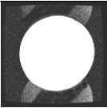

Table 1: Different Types of EPI Ghosts
| 3.1 “Edge” ghosting – normally seen with ramp-sampled
EPI prescriptions Check (EPI Ghosting Checks): 6, 8, 10 |  Figure 3.1 |
| 3.2 B0, “Constant” or “Flat Field”
EPI ghosting – is caused by a constant phase error between even &
odd EPI echoes. The ghost intensity is approximately uniform Check (EPI Ghosting Checks): 1, 2, 3, 4.2, 5, 9, 10, 11 |  Figure 3.2 |
| 3.3 “Linear” EPI ghosting – similar to a B0
ghosting in appearance with the addition of a vertical signal void.
Linear EPI ghosting is caused by a residual delay between even &
odd echoes. Increased linear ghosting normally indicates a gradient
problem. Check (EPI Ghosting Checks): 3, 4.1, 4.2, 6, 7, 8, 9 |  Figure 3.3 |
| 3.4 “Tilted Linear” EPI Ghosting - linear EPI ghosting
with a visible tilt in the signal void that indicates an uncompensated
cross-term eddy current generated by the readout gradient that maps
to the phase encode gradient. Check (EPI Ghosting Checks): 3, 8 |  Figure 3.4 |